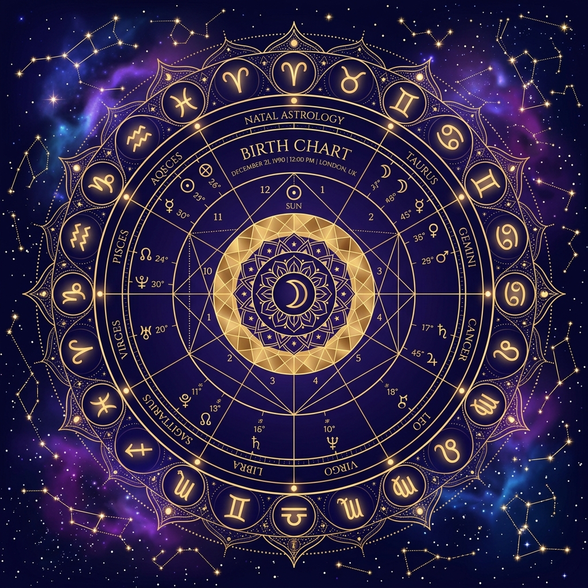
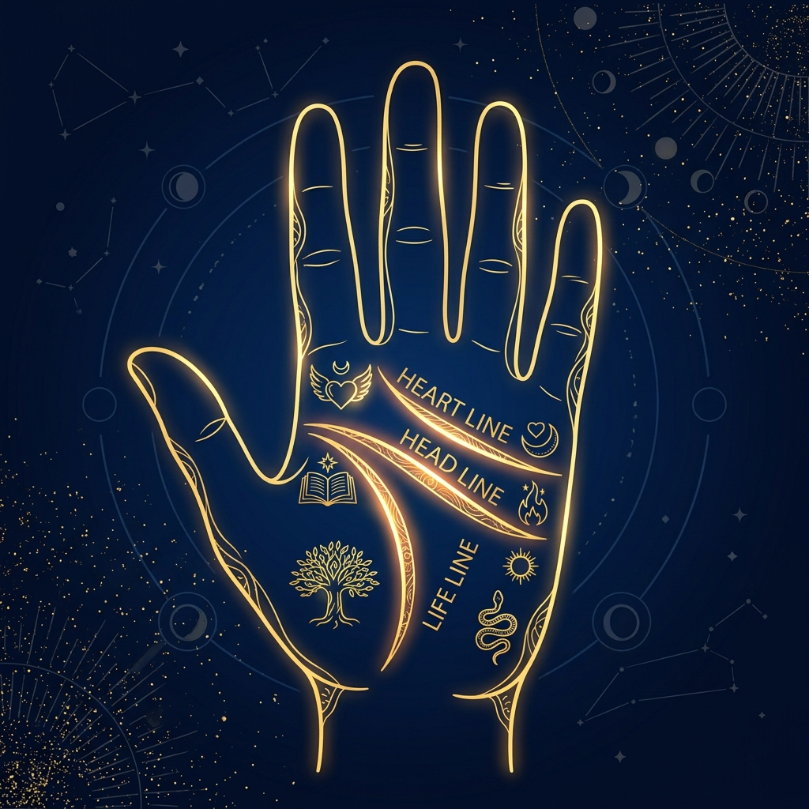

COSMIC SCANNER
AI-Powered Palmistry & Astrology Blueprint
Ascend to Your Blueprint
Enter your birth details and provide palm images to initiate the AI Cosmic Analysis.
Analyzing Astral and Physical Matrices
Aligning planetary coordinates with dermatoglyphic pathways...
COSMIC_AI_ENGINE_v4.2
Palak Vishwakarma
16 June 2008 | Seoni, MP
Aura Status & Profile Metrics
Gemini
Air / वायु
5
Life Path Number
The Adventurer / अन्वेषक
Core Cosmic Balances
90%
95%
85%
88%
Primary Strengths
Weaknesses & Challenges
The Mirror - Personality Analysis
Extreme Personality Echoes
Click on each card to reveal the deeper psychological AI reading of your hidden thoughts.
Astral Alignment & Hand Readings


Education & Career Destinies
Suitable Professional Fields
Learning Style & Academic Blueprint
Vibrational Timeline & Major Phases
Relationship & Attraction Timeline
17–19
Aura Resonance
First strong attraction or deeper emotional awakening occurs.
18–22
Deep Bond Potential
High potential for a significant, lessons-teaching serious relationship.
23–27
Harmonious Anchor
Most stable relationship and potential marriage window.
Peak Life Windows
The Growth Ascent
Age 24 – 32
The Stable Balance
Age 32+
Interactive AI Cosmic Oracle
Consult the Oracle using your scanned blueprint. Select a suggested question below or converse freely.